-
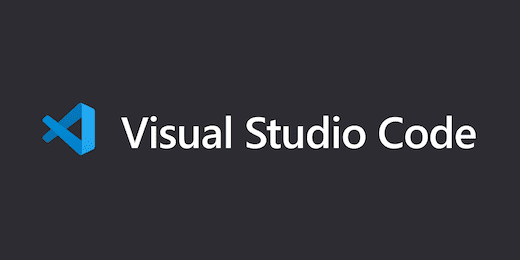
当本地代码部署到服务器上出现问题的时候，可以使用远程调试功能。
2020-09-25 22:25:01
-
Red Hat 更新 CentOS 源
2020-09-25 22:23:58
-
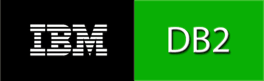
Spring Boot 非常适合做微服务，如果再加上 docker ，完美了！
2020-09-25 21:06:39
-
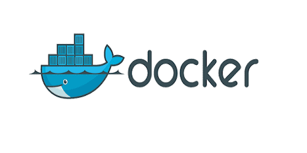
Docker 是一个开源的应用容器引擎，让开发者可以打包他们的应用以及依赖包到一个可移植的镜像中，然后发布到任何流行的 Linux或Windows 机器上，也可以实现虚拟化。容器是完全使用沙箱机制，相互之间不会有任何接口。
2020-09-25 21:05:57
-
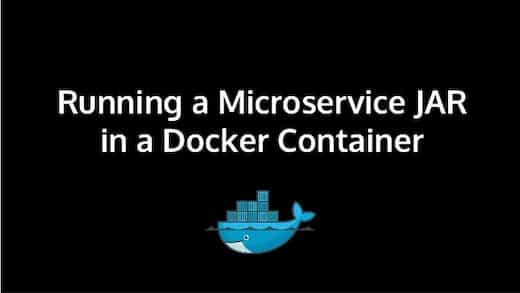
直接将 jar 包部署到 Docker 中并运行
2020-09-25 21:05:32
-
Portainer 是一个轻量级的 Docker 环境管理 UI，可以用来管理 Docker 宿主机和 Docker Swarm 集群。
2020-09-25 20:22:28
-
Docker 是一个开源的应用容器引擎，让开发者可以打包他们的应用以及依赖包到一个可移植的镜像中，然后发布到任何流行的 Linux或Windows 机器上，也可以实现虚拟化。
2020-09-23 13:56:59
-
Jenkins 是开源 CI&CD 软件领导者， 提供超过1000个插件来支持构建、部署、自动化， 满足任何项目的需要。
2020-09-22 10:15:06
-
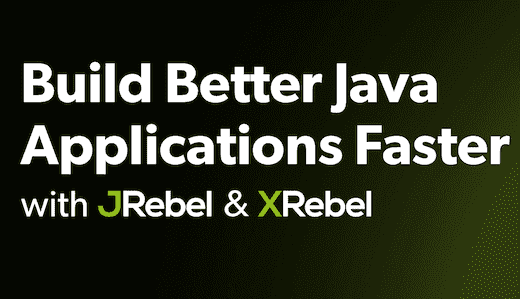
JRebel and XRebel enable Java development teams to create better applications, faster.
2020-09-20 20:18:03
-
DB2 是 IBM开发的一种大型关系型数据库平台。它以拥有一个非常完备的查询优化器而著称，其外部连接改善了查询性能，并支持多任务并行查询。具有很好的网络支持能力，对大型分布式应用系统尤为适用。
2020-09-07 09:17:15
-
免费的社区版完全可以满足日常开发
2020-09-06 20:55:37
-
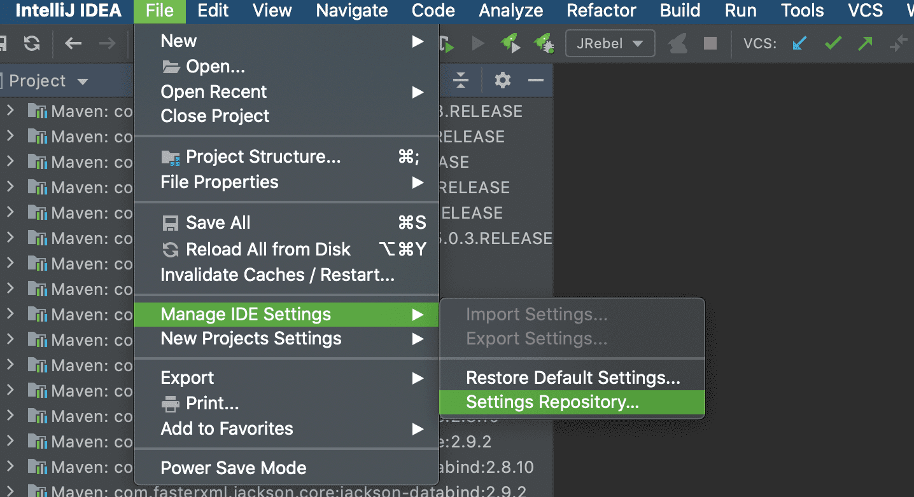
为了重装 IDEA 不用一个一个设置配置项、其他电脑或者别人也可以使用相同的配置
2020-08-18 08:15:53
-
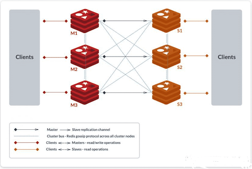
Windows 的一些积累在这里备份
2020-08-14 10:44:34
-
中国有句俗语讲：“可怜天下父母心”，父母“望子成龙、望女成凤”的心情每个人都理解，但是教育子女需要讲究方式方法，古人就总结出育子“七不责”。为人父母的你怎么可以不知道！！
2020-08-14 09:04:56
-
The World's Most Advanced Open Source Relational Database！
2020-08-14 08:53:48
-
实际业务中的使用
2020-08-14 08:53:37
-
Linux是一套免费使用和自由传播的类Unix操作系统，是一个基于POSIX和Unix的多用户、多任务、支持多线程和多CPU的操作系统。
2020-07-31 11:25:17
-
Spring Boot 整合 Redis
2020-07-21 08:15:21
-
Mac 环境下的 Java 开发
2020-07-07 21:42:00
-
MySQL是一个关系型数据库管理系统，由瑞典MySQL AB 公司开发，属于 Oracle 旗下产品。MySQL 是最流行的关系型数据库管理系统之一
2020-05-29 08:44:32
-
在 GitHub 无法连接的时候的解决方法
2020-05-26 08:23:12
-
Spring Boot 基础
2020-05-19 08:27:56
-
Nexus 是一个强大的 Maven 仓库管理器，它极大地简化了自己内部仓库的维护和外部仓库的访问。
2020-05-13 17:11:48
-
GitLab 是一个用于仓库管理系统的开源项目，使用Git作为代码管理工具，并在此基础上搭建起来的web服务
2020-05-08 14:32:43
-
Nginx("engine x")是一款是由俄罗斯的程序设计师 Igor Sysoev 所开发高性能的 Web 和 反向代理 服务器，它的特点：安装简单、配置文件简洁、Bug 少、启动容易、几乎7*24不间断运行、数月不需重启。
2020-05-08 05:34:54
-
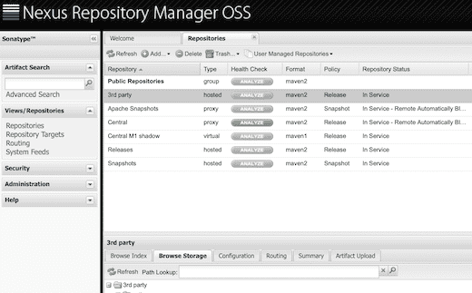
好处就是一般的开发人员不用在本地的 Maven 配置文件 settings.xml 文件中配置 Nexus 私服的账户信息，也没有上传 jar 包的权限。
2020-05-01 22:35:46
-
Maven是一个项目管理工具，它包含了一个项目对象模型，一组标准集合，一个项目生命周期，一个依赖管理系统，和用来运行定义在生命周期阶段(phase)中插件(plugin)目标(goal)的逻辑。
2020-04-28 08:45:56
-
trunk、branch、tag 的关系；怎么从 trunk 创建 branch 或 tag；trunk 更新代码后，如何同步到 branch 或 tag；branch 或 tag 修改了代码后怎么同步到 trunk ...
2020-04-26 09:53:43
-
“要安装，请拖动此图标......”不会再出现了。现在使用 brew 或 brew cask 可以直接安装 macOS 应用程序、字体和插件以及其他非开源软件。
2020-04-24 09:27:38
-
使用 mvn 打包后，是运行程序在 war包或jar包里面，依赖在可配置的 lib 目录
2020-04-17 20:59:27
-
Redis - REmote DIctionary Server，即：远程字典服务，Redis 是一个开源的key-value内存数据库，也就是基于Key-Value模式Memcached + Database Persistence。
2020-04-14 21:08:15
-
小型服务器
2020-04-14 11:27:59
-
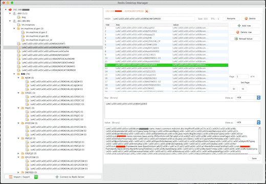
Redis 序列化
2020-04-13 08:50:00
-
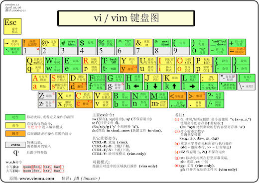
vi 文本编辑
2020-04-12 21:40:01
-
敏捷团队的首选软件开发工具
2020-03-28 15:56:23
-
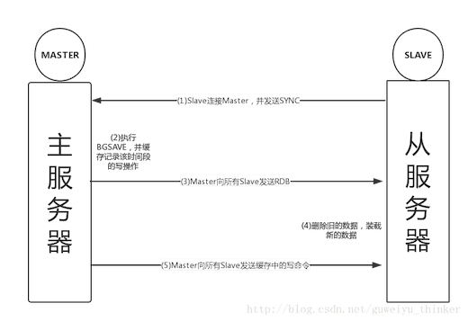
Redis 的复制功能是支持多个 redis 之间的数据同步。
2020-03-26 10:21:18
-
不需要写重复的代码
2020-03-26 10:19:40
-
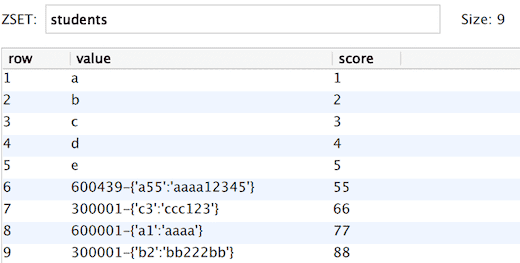
Redis 对于设计好的数据，查询速度是数据库的 N 倍！
2020-03-25 10:29:29
-
平时开发中最常用的一些方法
2020-03-19 09:46:46
-
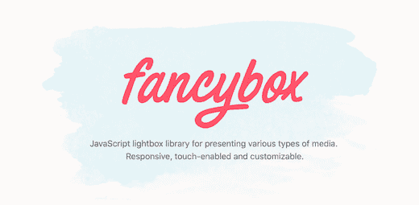
JavaScript lightbox library for presenting various types of media. Responsive, touch-enabled and customizable.
2020-03-01 19:57:48
-
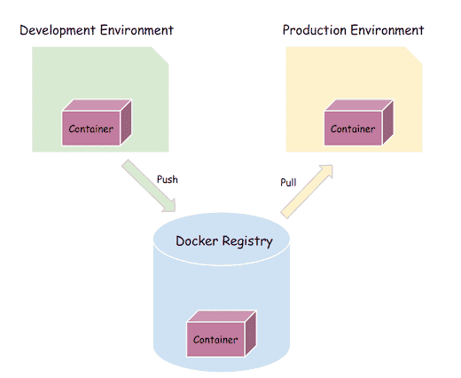
HiKariCP 是数据库连接池的一个后起之秀，号称性能最好，可以完美地PK掉其他连接池，是一个高性能的JDBC连接池，基于BoneCP做了不少的改进和优化。其作者还有另外一个开源作品——高性能的JSON解析器HikariJSON。
2020-03-01 13:16:45
-
这个可以在前端自动刷新页面，与 JRebel 有些区别。
2020-02-16 18:36:54
-
Kibana 是一个开源的分析和可视化平台，设计用于和 Elasticsearch 一起工作。 你用 Kibana 来搜索，查看，并和存储在ES索引中的数据进行交互。 你可以轻松地执行高级数据分析，并且以各种图标、表格和地图的形式可视化数据。
2020-02-10 13:09:37
-
Logstash 作为一个数据管道中间件，支持对各种类型数据的采集与转换，并将数据发送到各种类型的存储库，比如实现消费 kafka 数据并且写入到 ES，日志文件同步到对象存储S3等，mysql 数据同步到 Elasticsearch 等。
2020-02-10 12:58:20
-
Elasticsearch 是一个基于 Lucene 的搜索服务器，也是当今最先进，最高效的全功能开源搜索引擎框架。
2020-02-10 12:56:51
-
敏捷开发：就是把一个大项目分为多个相互联系，但也可独立运行的小项目，并分别完成，在此过程中软件一直处于可使用状态。
2020-02-10 12:40:51
-
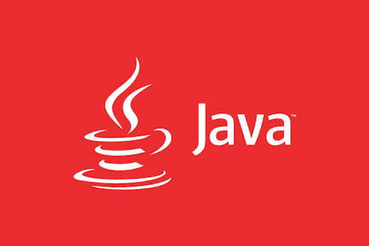
SkyWalking: 针对分布式系统的应用性能监控，尤其是针对微服务、云原生和面向容器的分布式系统架构 简介 SkyWalking 是一款开源的应用性能监控系统，包括指标监控，分布式追踪，分布式系统性能诊断。
2020-02-09 18:58:58
-
MongoDB 是基于分布式文件存储的数据库，提供可扩展的高性能数据存储解决方案，介于关系数据库和非关系数据库之间的产品，是非关系数据库当中功能最丰富，最像关系数据库的。
2020-02-07 17:43:33
-
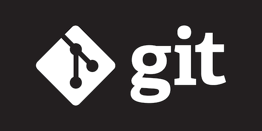
Git is a free and open source distributed version control system designed to handle everything from small to very large projects
2020-02-06 20:43:37
-
Nacos 致力于帮助您发现、配置和管理微服务。Nacos 提供了一组简单易用的特性集，帮助您快速实现动态服务发现、服务配置、服务元数据及流量管理。
2020-02-06 20:01:41
-
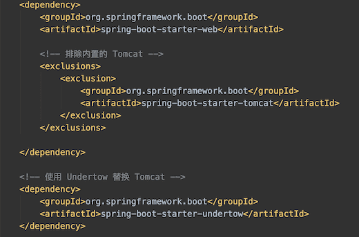
FFmpeg 是一套可以用来记录、转换数字音频、视频，并能将其转化为流的开源计算机程序。
2020-02-06 19:47:18
-
微信公众平台，简称公众号。曾命名为“官号平台”、“媒体平台”、微信公众号，最终定位为“公众平台”。
2020-02-03 19:09:20
-
Tengine是由淘宝网发起的Web服务器项目。它在Nginx的基础上，针对大访问量网站的需求，添加了很多高级功能和特性。Tengine的性能和稳定性已经在大型的网站如淘宝网，天猫商城等得到了很好的检验。它的最终目标是打造一个高效稳定安全易用的Web平台。
2020-02-02 19:46:16
-
Tomcat 是Java 最著名的开源Web容器，开源、简单、易用、稳定性极好。而 Undertow 是一款基于 NIO 的高性能 Web 嵌入式服务器，轻量级、高性能、提供阻塞或基于 XNIO 的非阻塞机制。
2020-02-02 13:43:50
-
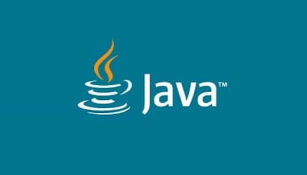
Linux 下安装 JDK，Windows 下安装 JDK，Mac 下安装 JDK
2020-01-31 20:58:09